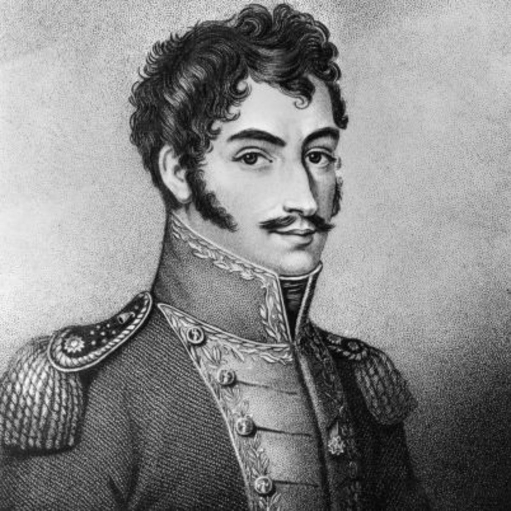

About Me
I am a South American soldier who was instrumental in the continent's revolutions against the Spanish empire. Born into wealth, I was sent to Spain for my education, soon deciding to immerse myself in the political sphere in Europe. I watched the extraordinary performance that culminated in Napoleon’s coronation in 1804 as emperor of the French. My reaction to the coronation wavered between admiration of the accomplishments of a single man and revulsion at Napoleon’s betrayal of the ideals of the French Revolution. The desire for glory was one of the permanent traits in my character, and there can be little doubt that it was stimulated by Napoleon. The example of Napoleon was, nevertheless, a warning that I needed. In my later days I always insisted that the title of “liberator” was higher than any other and that I would not exchange it for that of king or emperor. In 1807 I returned to Venezuela by way of the United States, visiting the eastern cities. After France invaded Spain in 1808, I became involved in the resistance movement and played a key role in the Spanish American fight for independence. In 1825, the "Republic of Bolivia" was created in honor of the my inspirational leadership, I was hailed by many as El Libertador (The Liberator).
I succeeded in uniting much of South America in a federation free from Spanish control, but the government was fragile. From 1819 to 1830, I was the President of Gran Colombia, which ultimately included the territories of present-day Colombia, Venezuela, Ecuador, Panama, northern Peru, western Guyana and northwest Brazil. I believed that a federation like the one in the United States was unworkable in Latin America and I thus tried to implement a centralist model of government in Gran Colombia. I was accused of betraying republican principles and of wanting to establish a permanent dictatorship. I ultimately failed to prevent the collapse of the union. Gran Columbia was dissolved in the closing months of 1830 and was replaced by the republics of Venezuela, New Granada and Ecuador.
I died of tuberculosis on 17th December 1830 in the city of Santa Marta in present-day Colombia. I was 47 years old. In July I had resigned from presidency and intended to leave Gran Columbia for exile in Europe but I died before setting sail from Cartagena. I am considered one of the great heroes of South American independence movements and I have been honored in countries across the region. The nation of Bolivia is named after me making me one of the few men to have a country named after them. Venezuela, officially Bolivarian Republic of Venezuela, also features my name.
Recently president Hugo Chavez took my ideals and sought to finish my work in Venezuela and Latin America. My image continues to inspire the many Bolivarian missions which bring education, healthcare and dignity to all the people of Venezuela. My legacy lives and my voice continues to echo around the world. I ask for nothing more than revolution and for my work to be carried out by the hands of the new generations.
"I wake up every hundred years when the people awake."- Pablo Neruda